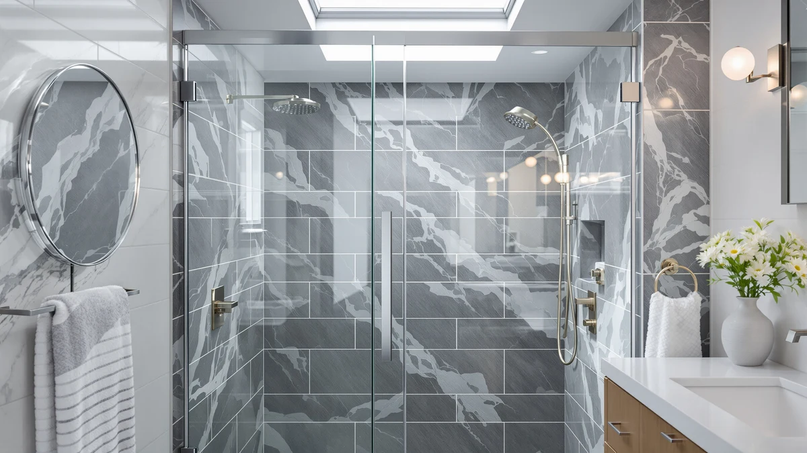

Best Shower Temperature (2026)
Prices and picks verified as of October 2026. Independent, reader-supported reviews.


Quick Answer
For most bathrooms, the best shower temperature comes down to a door that seals well and covers enough of the opening to hold heat in, and the Aurisal Frameless Stainless Steel Sliding Shower does both at a reasonable price. If your opening runs taller or you are working with a tighter budget, we have six other picks below, including a full 76-inch slider and options under $270.
Our pick: Frameless Stainless Steel Sliding Shower — $389.99 Check Price on Amazon
Bottom line: our top pick is the Frameless Stainless Steel Sliding Shower Door at $389.99. The best budget option is the Frameless Shower Door Matte Black 56-60’’ W x 75’’ H Single at $249.30.
Things to Know Before You Buy
- Height affects heat retention more than material. A 76 inch door closes nearly all the gap above a standard shower pan, while a 72 inch door leaves more room for warm air and steam to escape and cold air to drift in.
- Sealing matters as much as size. A door that fits its opening but sits out of level, or has a worn bottom seal strip, leaks drafts no matter how tall it is.
- Doors fit a width range, not a fixed size. Most adjust across a span such as 55 to 60 inch and install reversibly, so measure your opening before you buy.
- Frameless doors lean more on mounting and silicone than framed doors. They look cleaner and are easier to wipe down, but they take more care to install watertight.
- The shower base is not included. These are glass-and-hardware kits; you supply the pan, base or tiled curb and the surrounding walls.
Getting the best shower temperature in your bathroom depends on more than your water heater and shower valve. It also depends on how much warm air and steam actually stay inside the enclosure once the water is running, and that comes down to your shower door. A door with a tight seal and enough height to close the gap above the pan holds heat and steam in, while a short or poorly sealed door lets cooler room air mix in continuously and drags the felt temperature down even when the valve reading has not moved.
We compared seven frameless and sliding shower doors sold for standard US alcove openings, weighing height, width range, glass quality and sealing against price and verified owner feedback. For most bathrooms, the Aurisal Frameless Stainless Steel Sliding Shower is the pick that gets the balance right: a full 60 by 72.25 inch frameless panel with a stainless steel frame kit at $389.99, sized to close most of the opening without the premium price of the tallest doors here.
If your opening runs taller or you want the most coverage possible, the KPUY and BoBliss picks add a full 76 inches of height. If you are working with a tighter budget, the ENSO SENKA and Ogonbrick doors come in well under $270 while still giving you real frameless, tempered-glass panels. Below, we break down what each door gets right, where it falls short, and who should buy it.
Why You Should Trust Us
Best Shower Doors is written by Ilane Tall, who covers bathroom fixtures and remodeling for a US audience. We do not run a fake testing lab and we do not invent star ratings or review counts. What we do is read the published spec sheet for each door, cross-check the width range and height against the dimensions buyers actually need, and dig through verified owner reviews to see which doors hold up and which ones leak drafts or rattle loose. When a door has a real weakness, including one that affects how well it holds the best shower temperature inside the enclosure, we say so plainly. Every Amazon link on this page is affiliate-tagged, which supports the site at no cost to you and never changes which door we recommend.
How We Picked
We started with frameless and sliding shower doors that are actually in stock and shipping to US addresses, then narrowed the field on the factors that matter for everyday use. Height came first, since a 76 inch door closes more of the gap above a standard shower pan than a 72 inch door, holds in more heat and steam, and gets you closer to the best shower temperature all the way through a shower. We also weighed the adjustable width range, because a door that fits a 55 to 60 inch span covers far more bathrooms than one built to a single fixed size. From there we looked at glass quality, hardware and reversible installation, and we read through verified owner reviews for recurring complaints about sealing, alignment or drafts. The seven doors below span a range of heights, widths and budgets so there is a fit for most standard alcove showers.
How We Compared
We are upfront about our method: we did not install seven shower doors in a test bathroom and measure drafts with a thermometer. Instead, we compared each door on the manufacturer's published specs, specifically height, width range, glass thickness and seal type, and set those against the patterns that show up across dozens of verified purchase reviews. The signals we look for are consistent: does the glass feel solid rather than flimsy, does the slider stay smooth after months of use, and do owners report the door staying sealed and holding heat, or do they flag drafts and leaks at the bottom track. Where the same issue comes up repeatedly, we call it out as a flaw for that pick instead of leaving it out, since a door that cannot seal well cannot deliver the best shower temperature regardless of its other specs.
Our Picks

Frameless Stainless Steel Sliding Shower
What we like
- Full 60 by 72.25 inch panel closes most of a standard alcove opening, helping hold in heat and steam
- Stainless steel frame kit adds rigidity at this price point without the full cost of a frameless-only design
- Tempered safety glass with a clean, modern look
- Straightforward reversible install for a left- or right-hand opening
Flaws but not dealbreakers
- 72.25 inch height is shorter than the tallest doors here, so a drafty bathroom may still notice some heat loss near the top
- Stainless frame shows water spots faster than an all-glass frameless design in hard-water areas
| Material | — |
| Size | 60"*72"-1/4" |
The Aurisal earns the top spot because it covers the most common opening size, 60 inches wide, with a full 72.25 inch panel and a stainless steel frame kit that keeps the price under $400. That height closes off most of the gap above a standard shower pan, which matters more than people expect: the less open space above the door, the less cold bathroom air mixes into your spray, and the closer your shower stays to the best shower temperature you set at the valve.
The frame kit also makes this an easier install than a true frameless door, since the steel track takes some of the leveling pressure off the glass itself. The trade-off is mostly cosmetic: a stainless frame shows water spots faster than bare glass if you have hard water, so plan on wiping it down regularly. At $389.99 it is not the cheapest door on this list, but for a standard 60 inch opening it is the one we would default to first.

KPUY Frameless Shower Door 55-60"
What we like
- Full 76 inch height closes nearly the entire gap above the shower pan, cutting down draft and heat loss
- 55 to 60 inch adjustable width fits standard alcoves with room to spare
- Smooth roller hardware keeps the slide quiet
- Clean frameless glass with no frame to collect grime
Flaws but not dealbreakers
- At nearly $500 it is the most expensive door in this lineup
- The taller, heavier glass panel calls for a two-person install
| Material | — |
| Size | 55-60" W x 76" H |
If your priority is holding the best shower temperature as steady as possible, height is the lever that matters most, and the KPUY gives you the most of it here at a full 76 inches. That extra 4 inches over the 72 inch doors on this list closes nearly all of the open space above a standard pan, so there is less room for warm air and steam to escape and less cold air sneaking in from the rest of the bathroom.
The 55 to 60 inch adjustable width covers most standard alcove openings, and the roller hardware slides smoothly without the grinding or sticking that cheaper tracks sometimes develop. The catch is price and weight. At roughly $500 it is the priciest door here, and a 76 inch panel of tempered glass is heavy enough that you should plan on a second person to help hang it. For a tall opening or a bathroom that runs noticeably drafty, it is worth the premium.

ENSO SENKA 56-60" W x
What we like
- Among the least expensive frameless doors on this list at $269.99
- 56 to 60 inch adjustable width fits standard alcove openings
- Full 72 inch height still closes most of the opening above the pan
- Genuine tempered safety glass rather than a thinner laminated panel
Flaws but not dealbreakers
- Hardware feels a step below the premium KPUY and BoBliss doors in finish
- No stainless frame kit, so the install leans more on precise wall mounting and sealing
| Material | — |
| Size | 60" W X 72" H |
The ENSO SENKA proves you do not need to spend $400 or more to get a door that helps hold heat in. At $269.99 it undercuts most of the frameless doors on this list by a wide margin, and it still delivers the 72 inch height that closes off most of the gap above the shower pan, rather than the shorter, cheaper panels that let more warm air and steam escape.
The 56 to 60 inch adjustable width makes it a workable fit for most standard alcoves, and the glass itself is genuine tempered safety glass, not a thinner stand-in. The honest trade-off is finish and hardware feel: the slider and handle do not feel as refined as the pricier KPUY or BoBliss doors, and without a frame kit, getting a tight seal relies more on a careful, level install. For a tight budget, it is the best-sealing door we found under $300.

Frameless Shower Door Matte Black
What we like
- Lowest price on this list at $249.30
- Matte-black hardware gives a high-contrast, modern look chrome cannot match
- 75 inch height still covers nearly as much of the opening as the taller doors
- Single sliding design with tempered safety glass
Flaws but not dealbreakers
- Matte-black finish shows hard-water spots and fingerprints more than chrome, so it needs regular wiping
- 75 inch height is a notch shorter than the 76 inch doors here, worth checking against a tall opening
| Material | — |
| Size | 60" W x 75" H Single Sliding |
If you have been drawn to the matte-black bathroom look, this door gets you there for less than any other option on this list. At $249.30 it is the most affordable door here, and despite the price it still gives you a 75 inch panel, an inch shy of the tallest doors, so you are not giving up much coverage for the savings.
The black hardware and track read as a deliberate design choice rather than an afterthought, and the single sliding mechanism keeps the footprint simple for a standard opening. The trade-off is maintenance: matte black shows water spots and fingerprints more readily than chrome, so if you have hard water, plan on wiping the frame down regularly to keep it looking sharp and to keep the seal area clear of mineral buildup that could eventually affect how well it closes.

GETPRO Shower Door Double Sliding
What we like
- Double sliding panels open from the center, giving a wider usable step-in than a single slider
- 72 inch height matches the mid-range coverage of most doors on this list
- One of the more affordable options at $260.07
- Tempered safety glass on both panels
Flaws but not dealbreakers
- The center overlap between the two panels is the main spot to check for a tight seal during install
- Two sets of rollers means slightly more hardware that can eventually need adjustment
| Material | — |
| Size | 60'' W x 72'' H |
The GETPRO takes a different approach than the single sliders on this list by splitting the opening into two panels that slide toward the center. In practice that gives you a wider, more walk-in feel when the door is open, which helps if you step in and out with your hands full or prefer not to duck through a narrow gap.
At $260.07 it undercuts most of the taller, single-panel doors here while still offering a full 72 inch height. The one install detail worth getting right is the center overlap where the two panels meet, since that seam is the main place warm air or water could escape if the panels are not adjusted correctly. Done carefully, it seals about as well as a single sliding door and gives you more flexibility in how you move in and out.

BoBliss Frameless Sliding Glass Shower
What we like
- Full 76 inch height, tied with the KPUY for the most coverage on this list
- 56 to 60 inch adjustable width fits standard alcoves
- Roughly $70 less than the KPUY for the same height advantage
- Clean frameless tempered glass
Flaws but not dealbreakers
- Still a premium price relative to the budget doors on this list
- Tall, heavy glass panel again calls for a two-person install
| Material | — |
| Size | 56-60" W x 76" H |
The BoBliss sits right alongside the KPUY as the tallest door we compared, matching its full 76 inches while coming in at $429.99, about $70 less. If the extra height is what you need to close the gap above your pan and keep more heat and steam inside the enclosure, this is the more budget-friendly way to get it.
The 56 to 60 inch adjustable width covers the same standard alcove range as its rivals, and the frameless glass keeps the look clean with no metal edge to collect grime. It is still a premium-priced door compared with the budget picks here, and a 76 inch tempered glass panel is heavy enough that you will want a second person for the install. For a tall opening on a slightly tighter budget than the KPUY, it is the pick to compare first.

Frameless Stainless Steel Sliding Shower
What we like
- Same 60 by 72.25 inch coverage and stainless steel frame kit as our top Aurisal pick
- Tempered safety glass with the same clean, modern finish
- Useful backup listing if the primary Aurisal door is out of stock or priced higher at checkout
Flaws but not dealbreakers
- About $10 more than our top pick for essentially the same door
- Same 72.25 inch height limit, so it will not close the gap as fully as the 76 inch doors here
| Material | — |
| Size | 60"*72"-1/4" |
This is a second Amazon listing for essentially the same Aurisal frameless stainless steel sliding door as our top pick, with the same 60 by 72.25 inch coverage and stainless frame kit. It exists here because listings for this exact door shift in price and stock from week to week, and at $399.99 it currently runs about $10 above our top pick.
Everything we said about the top pick applies: the stainless frame kit adds rigidity, the 72.25 inch height covers most of a standard opening without reaching the full 76 inches of the tallest doors here, and the frame needs occasional wiping in hard-water areas. If the primary Aurisal listing is temporarily out of stock or priced higher than usual, this is the listing to check before paying more for a different door.
Quick Comparison
Here is how all seven doors stack up on price and fit, so you can match coverage to the best shower temperature setup your bathroom needs.
| Product | Material | Price | Rating | Best for | Get it |
|---|---|---|---|---|---|
| Frameless Stainless Steel Sliding Shower | — | $389.99 | 4 | Standard 60-inch openings wanting a tight seal without a premium price | View on Amazon → |
| KPUY Frameless Shower Door 55-60" | — | $499.96 | 4 | Taller openings wanting maximum 76-inch heat retention | View on Amazon → |
| ENSO SENKA 56-60" W x | — | $269.99 | 4 | Budget remodels wanting real frameless glass under $300 | View on Amazon → |
| Frameless Shower Door Matte Black | — | $249.30 | 4 | Modern matte-black styling at the lowest price here | View on Amazon → |
| GETPRO Shower Door Double Sliding | — | $260.07 | 4 | A wider double sliding opening on a budget | View on Amazon → |
| BoBliss Frameless Sliding Glass Shower | — | $429.99 | 4 | Tall 76-inch coverage for less than the KPUY | View on Amazon → |
| Frameless Stainless Steel Sliding Shower | — | $399.99 | 4 | Same Aurisal fit as our top pick, as a backup listing | View on Amazon → |
The Competition
We looked at several shower doors that did not make the final seven. A handful of ultra-thin glass sliders under $200 kept coming up in reviews with complaints about visible flex, rattling tracks and drafts along a warped bottom seal, so we left them off in favor of doors like the Ogonbrick, which holds a similar price without those complaints. We also passed on a few bi-fold and accordion-style doors. They can fit a tighter opening, but the extra hinges and seams give both water and cold air more places to get through, which works against the tight, consistent seal we are after here.
At the premium end, some fully custom heavy-glass enclosures looked great on paper but required professional measurement and installation that pushed the real cost well beyond anything on this list, so they did not fit a buy-it-online roundup. The seven doors above are the ones that balance real height and width coverage, a dependable seal, and a price that most people chasing the best shower temperature can actually justify, led by the Aurisal as the pick we would buy first.
What these prices have actually done
We check the price of every product on this page every hour and keep the record. These figures are observations, not estimates or forecasts.
- KPUY Frameless Shower Door has ranged from $424.97 to $499.96 across 25 hourly price checks since September 27, 2026. It was $499.96 at the last check.
- ENSO SENKA 56-60" W x 72" H Semi-Frameless Bypass Sliding Shower Door has ranged from $251.99 to $269.99 across 23 hourly price checks since September 27, 2026. It was $251.99 at the last check.
- GETPRO Shower Door Double Sliding 57-60 in. W x 72 in. H has ranged from $260.07 to $273.76 across 22 hourly price checks since September 27, 2026. It was $260.07 at the last check.
- BoBliss Frameless Sliding Glass Shower Door has ranged from $419.99 to $439.99 across 26 hourly price checks since September 27, 2026. It was $429.99 at the last check.
Last updated October 26, 2026. Amazon prices change constantly; the figure you see on Amazon right now is the one that counts.
Frequently Asked Questions
Does a shower door actually affect your shower temperature?
Yes, more than most people expect. A shower door that seals well against the wall and the shower pan blocks the draft of cooler bathroom air that would otherwise mix with your spray and pull down the best shower temperature you set at the valve. A gappy curtain or an undersized door lets that cold air in continuously, so your water heater has to work harder to hold the same feel.
What shower door height keeps the most heat in?
Taller is better. A 76 inch door, like our KPUY and BoBliss picks, closes most of the open space above a standard shower pan, trapping more steam and warm air inside the enclosure. A 72 inch door leaves a noticeably larger gap at the top, so in a drafty bathroom the extra 4 inches of coverage makes a real difference to how warm the shower feels from start to finish.
Do frameless shower doors leak more cold air than framed ones?
A little. A framed door has a continuous metal track and gasket, while a frameless door depends on precise wall mounting plus a silicone bead and a seal strip. Installed correctly, the difference is minor, but a frameless door is a touch less forgiving if the opening is not level or the seal strip has worn out.
Can a double sliding shower door hold heat as well as a single panel?
Yes, as long as both panels overlap properly where they meet. The GETPRO double sliding door we recommend uses two panels that close against each other in the middle, and the main gap to watch is that center overlap rather than the door edges against the wall. Adjusted correctly during install, it seals about as well as a single sliding panel.
How do I stop cold drafts from under my shower door?
Check the bottom seal strip first, since it is the most common failure point, and replace it if it has gone stiff or cracked. Beyond that, make sure the door is mounted level, because even a small tilt opens a wedge-shaped gap at one end. If your pan has a lip or curb, confirm the door's sweep actually rests against it rather than hovering above it.
Related Guides
If you are still working out the best shower temperature setup for your bathroom, these guides cover the related decisions on style, material and upkeep.